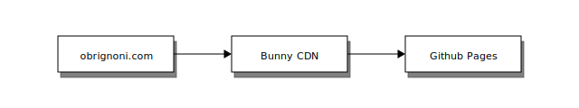

New blog built with Astro
The best time to plant a tree is twenty years ago. The second best time is now.
~ Chinese Proverb
The purpose of this blog
Every day, I write notes to stay organized and build a second brain1. I think it is a good idea to condense some of these notes and publish them here.
I created this blog to share my thoughts on a variety of topics: software engineering, productivity, health and some of my favorite books.
Who knows. Maybe this will open some doors.
I decided to make it a static website
There are so many great content management systems.
Why build a static website?
I can…
- Sleep knowing the site is secure. There is nothing to hack.
- Deploy the site on Github Pages.
- Automate the build process with Github Actions.
- Write content with markdown files.
- Put a CDN in front of it.
My setup looks like this.

Why I chose Astro

More HTML, Less JavaScript
Meet Astro’s magic tool for web optimization. Astro is the first site builder to eliminate dead code from your website and only hydrate your essential, interactive UI.
Site performance has a tangible impact on the success of your business. Astro sites can be up to 40% faster and use 90% less JavaScript compared to leading static site generators.
~ astro.build
There are so many great options. I considered some of the well known tools like Jekyll, Hugo, Next.js. I recently became aware of Astro and I decided to go with it for the following reasons.
1. Use JavaScript. Ship with less of it.
By default, Astro generates plain HTML without bundling all the JavaScript into one file. You can use JavaScript or TypeScript components to render the HTML during the build step. In case you need to handle some interactivity or JavaScript events, you can opt-in to use partial hydration2 for each component. This makes the resulting pages lightweight and fast. Each page loads their own JavaScript when necessary, so they can be benchmarked independently.
2. Bring your preferred JavaScript library or framework.
I have been using React.js for the last couple of years. I’ve also used Vue.js. I might try other frameworks like Svelte. Astro supports all these and more. It is nice to know I can use any of these frameworks, depending on what is the best fit for the use case and for the people I am collaborating with.
3. It has a simple JSX based template system.
Creating the quote above with the image aligned to the left is this simple.
The ImageQuote.astro component.
---
export interface Props {
src: string;
alt: string;
}
const { src, alt } = Astro.props;
---
<blockquote>
<div class="row">
<div class="col-xs-3">
<img {src} {alt} />
</div>
<div class="col-xs-9">
<slot />
</div>
</div>
</blockquote>Import a component and use it in a markdown file.
---
setup: |
import ImageQuote from '@components/ImageQuote';
---
## Why I chose Astro
<ImageQuote src="/articles/astro.svg">
__More HTML, Less JavaScript__
Meet Astro’s magic tool for web optimization. Astro is
the first site builder to eliminate dead code from
your website and only hydrate your essential,
interactive UI.
Site performance has a tangible impact on the success of
your business. Astro sites can be up to 40% faster and
use 90% less JavaScript compared to leading static
site generators.
~ astro.build
</ImageQuote>Boom. In the build process, Astro inserts the markdown as a child of the component and renders it together.
Final Thoughts
I only scratched the surface of Astro’s features. So far, it has been a good development experience. I haven’t used it with React.js or other libraries yet. It is still in Beta. A stable version will be released soon. I will reserve my opinion on the stability of it’s integrations until then.
It is definitely worth building a personal website with it right now. Heck, Google built the Firebase Blog with Astro and it is beautiful.
Footnotes
-
Building a Second Brain by Tiago Forte. ↩
-
Astro generates every website with zero client-side JavaScript, by default. Use a frontend UI component built with React, Preact, Svelte, Vue, SolidJS, AlpineJS or Lit and Astro will automatically render it to HTML at build-time and strip away all JavaScript. This keeps every site fast by default. But sometimes, client-side JavaScript is required for creating interactive UIs. When you find yourself needing interactive UI on the page, Astro doesn’t force you to go 100% JavaScript on the entire page. Instead, Astro uses a technique called partial hydration that lets you hydrate individual components on the page. This way, you only send down the absolutely essential JavaScript that you need to run your page. https://docs.astro.build/en/core-concepts/partial-hydration/ ↩